AI PRODUCT MANAGER · HANGZHOU
把业务问题，拆成可验证、可体验的 AI 产品方案。
我是张冰冰，AI 产品经理候选人。这里重点展示 4 个产品案例：高考志愿小程序、包装文案校对、电商售后智能客服和女性健康记录。每个案例都围绕一个具体问题展开，呈现从需求拆解、PRD/原型、技术方案到指标验收的产品过程。
1段AI产品实习
4个产品案例
4类真实场景
核心优势在于将业务目标、用户需求、能力边界、数据指标与验收标准转化为可评审、可体验、可验证的 AI 产品方案。
SELECTED WORK
用 4 个产品案例，对应 AI 产品经理能力地图。
项目入口按岗位能力组织：0-1 上线、ToB 流程抽象、Agent/RAG、隐私型 MVP。每个案例继续按“问题定义 → 方案设计 → 技术实现 → 效果验证”展开。
核心推荐案例 · 已上线小程序
登科星
浙江高考志愿填报微信小程序。重点看：复杂决策拆解、AI 解读边界、支付权益和商业化闭环。
优先查看真实上线案例 ↗ 02 · ToB / 包装行业棂至精校
包装文案智能核对。重点看：OCR、规则校验、人工复核和包装行业认知。
看行业落地 ↗ 03 · Agent / RAG晓晓AI
电商售后智能客服。重点看：意图路由、工具调用、知识库检索、转人工与 UAT 指标。
看AI流程 ↗ 04 · C端 / 隐私设计月信
围绝经期健康记录 App。重点看：细分人群洞察、低负担记录、就诊摘要和本地隐私。
看用户洞察 ↗01
登科星 · 高考志愿填报决策辅助工具
项目核心定位为高考志愿决策辅助工具，将分数、位次、选科、城市、专业与风险因素整理为普通家庭可理解、可执行的选择方案。
面试官看点
0-1 上线能力、复杂决策拆解、AI 解读边界、支付权益与商业化闭环。
我的产出
独立完成产品定位、测评问卷、推荐链路、付费权益、体验脚本、PRD 与技术文档，并提供真实小程序入口供体验。
角色独立开发者
交付物小程序、PRD、推荐链路、支付权益
验证真实体验入口 + 免费/付费链路验收
问题定义
浙江新高考以“院校专业”为志愿单位，家长既要看位次和选科，又要理解专业门槛、城市机会、学费和风险。核心难点在于信息高度分散，难以快速形成可执行清单。
方案设计
把决策拆成“测评画像 → 数据匹配 → 冲稳保分层 → 免费试看 → 付费解锁 → 学校/专业查询”的闭环。用户先获得方向判断，再看推荐理由、风险提醒和可导出的志愿参考方案。
技术实现
采用微信原生小程序 + 云开发。推荐、查询、订单权益与 AI 解读分别由独立云函数承接，保证业务链路清晰可追踪。
效果验证
围绕 4 条链路验收：测评是否能完成、推荐是否可解释、支付后权益是否准确、内容是否合规。重点避免“必中”“录取概率”等高考场景不合规表达。
微信小程序上线复杂决策产品结构化测评数据匹配付费权益商业化闭环
体验边界产品不承诺录取结果，不替代正式志愿填报系统；高考场景下避免“必中”“录取概率”等不合规表达，推荐结果仅作为参考。
LIVE MINI PROGRAM
真实产品体验入口与案例拆解
建议面试官按样例位次快速体验：开始测评 → 普通类 → 位次 3200 → 城市偏好杭州/上海/苏州 → 查看推荐与解锁点。
小程序口令
#小程序://登科星/32gZFQeK5Ng0Z7y
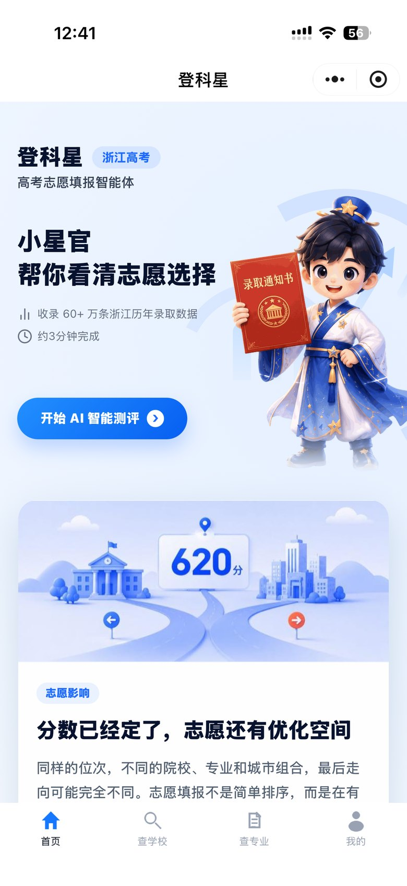
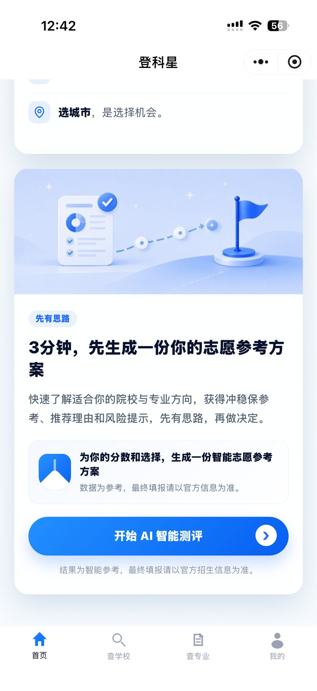
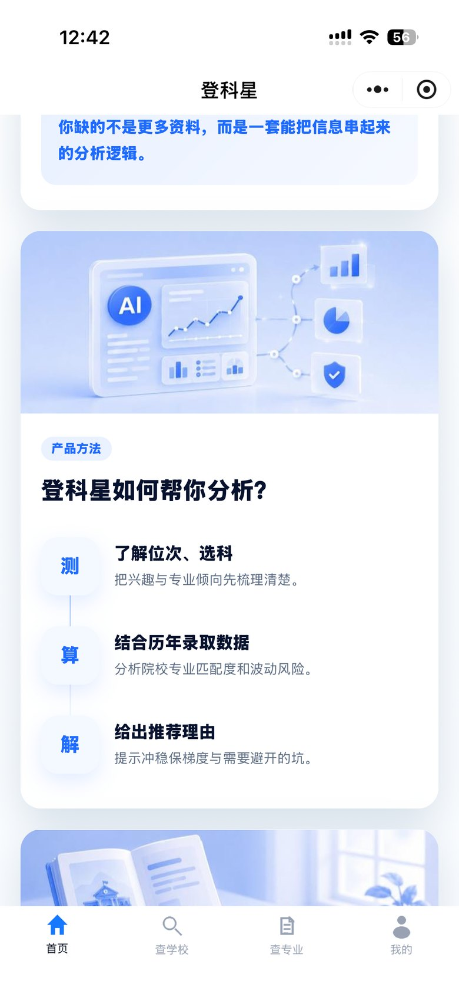
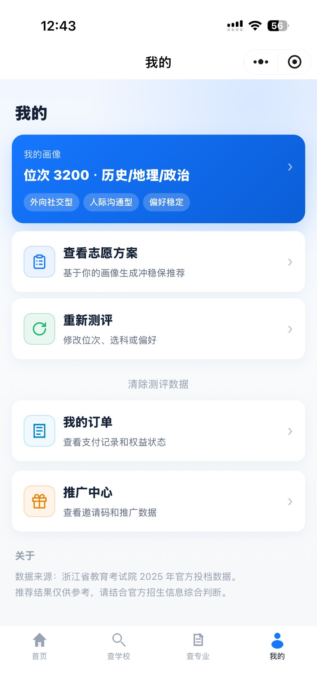
02
棂至精校 · 包装文案智能核对工具
针对包装出稿前人工逐字核对效率低、追责难的问题，方案将校对流程拆分为输入控制、文字识别与证据化报告三个阶段。
面试官看点
ToB 流程抽象、OCR + 规则校验、AI 辅助边界、POC 验收设计。
我的产出
梳理包装校对流程，输出 PRD、技术文档、OCR 处理流程、报告分类规则、POC 验收框架与系统架构说明。
角色独立开发者
交付物PRD、技术文档、OCR流程、POC验收框架
验证耗时、分类、OCR可靠性与人工复核成本
问题定义
包装文案单经常包含多规格、多版本、多包装面，人工核对不仅慢，还容易把“不属于当前包装”的内容误判为缺失；图标、箭头、设计标注也会干扰 OCR 和语义判断。
方案设计
设计“文案单上传 → 包装图上传 → 主体文案框选 → OCR 识别 → 规则比对 → 语义复核 → A-E 分类报告 → 人工确认”的流程，让用户先减少噪声，再查看可复核的差异证据。
技术实现
小程序前端处理文件选择、拍照/相册、主体框选和报告展示；createReport 云函数负责文案读取、包装图下载、百度 OCR/条码识别、规则比对和 DeepSeek 语义复核。
效果验证
验收不只看“识别到了没有”，还看 60 秒内报告生成、最多 2 张包装图、OCR 低置信处理、A-E 分类准确性、图示旁注误并入率、条码识别与人工复核负担。
PRD微信小程序百度 OCRDeepSeek条码识别云函数
产品边界首版聚焦包装文案一致性校对，不做法规合规判定，不替代人工最终确认。
核心流程
标准文案 → 包装图 → 主体框选 → OCR/规则比对 → AI复核 → A-E报告 → 人工确认
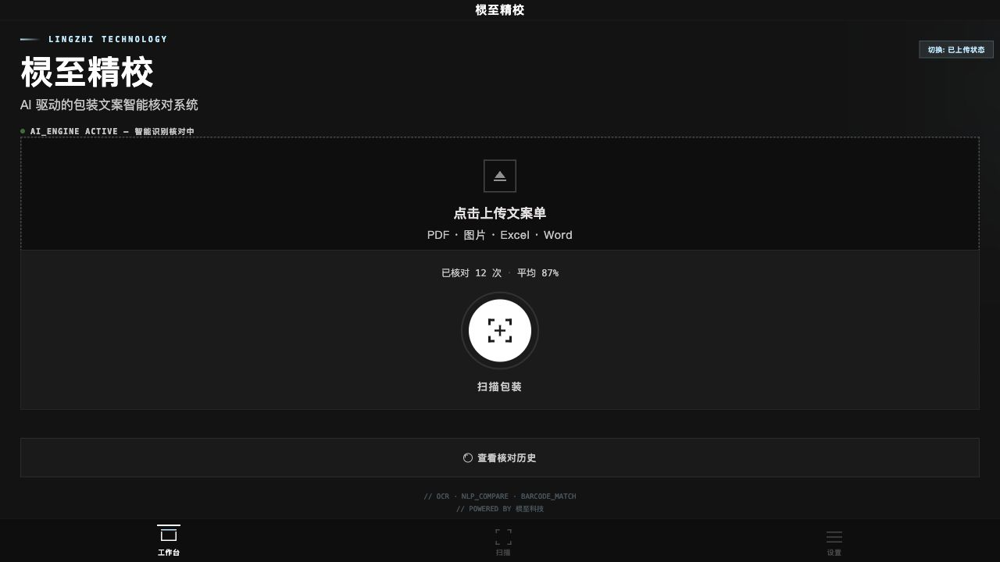
02主体框选
先框选需要校对的包装区域，减少图标、箭头、装饰和打样批注干扰。
03OCR + 规则比对
提取文字块、位置和置信度，再按字段一致性做第一轮判断。
04语义复核
DeepSeek 辅助理解多规格、多版本、多包装面，不直接替代对错判断。
05人工确认
差异报告保留证据与建议动作，最终签核仍交给业务人员。
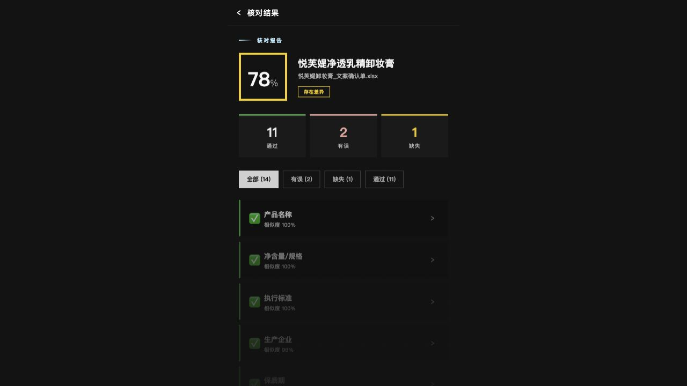
03
晓晓 · 电商售后服务自动化方案
项目定位为售后履约系统，而非普通聊天机器人，核心能力覆盖意图识别、槽位补全、工具调用、知识检索与人工兜底。
面试官看点
Agent 工作流、RAG 知识库、工具调用、转人工兜底与指标体系。
我的产出
完成 MASTER PRD、Agent 工作流、RAG 规则、接口清单、UAT 用例、指标字典、埋点表与模拟数据分析看板。
角色独立开发者
交付物MASTER PRD、Agent工作流、接口清单、UAT
验证16条UAT、30项指标、23个埋点事件
问题定义
电商售后问题往往带业务动作：查物流要订单号，退款要原因，改地址要判断订单状态，洗护/尺码要有知识库依据，高危投诉还要审计和转人工。普通问答无法承担这些责任。
方案设计
按消费者、人工坐席、运营管理员三类角色拆解流程，设计“进线预处理 → 意图路由 → 槽位填充 → 工具调用/RAG → 结构化卡片回复 → 转人工”的 Agent 工作流。
技术实现
前端 React + Vite，后端 FastAPI。LLM 分类兼容 OpenAI 格式接口，并保留关键词降级；RAG 由 JSON 知识库、ChromaDB 与向量模型支撑。
效果验证
用 16 条 UAT 覆盖订单、退款、改地址、催发货、知识咨询和高危拦截；同时建立 30 项指标、23 个埋点和 1,200 条模拟会话，用于观察路由、转人工、幻觉和响应效率。
MASTER PRDAgent WorkflowSystem ArchitectureAPIModel EvaluationRAG Safety
验证范围基于可运行演示、UAT 用例和合成数据分析验证产品方案，重点呈现售后 Agent 的流程设计与指标体系。
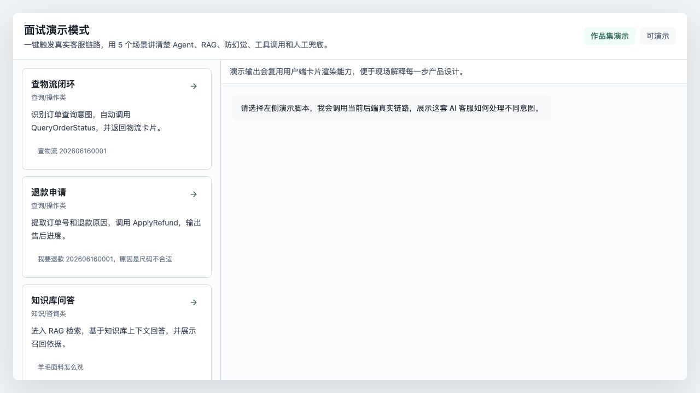
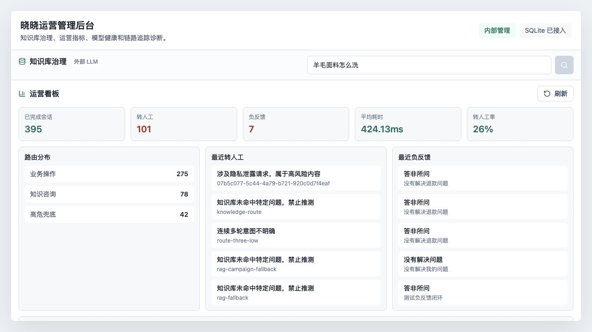
04
月信 · 女性健康 App
项目面向 35-45 岁围绝经期女性，聚焦低负担记录、本地隐私保存与就诊沟通辅助，避免落入普通经期预测工具的单一场景。
面试官看点
细分人群洞察、低负担 MVP、隐私产品设计与就诊沟通闭环。
我的产出
完成细分人群定位、MVP 范围收敛、React 可交互原型、隐私策略、本地数据契约与就诊摘要流程设计。
角色独立开发者
交付物PRD、React可交互原型、本地数据契约
验证低负担、隐私感知、摘要价值指标设计
问题定义
围绝经期变化往往私密、零散、持续时间长：周期波动、点滴出血、潮热夜汗、睡眠、情绪和脑雾都可能影响就诊沟通。核心需求在于帮助用户持续记录并清晰表达变化。
方案设计
围绕“20 秒快速记录”和“30/90 天就诊沟通摘要”设计 MVP：首次引导区分关注重点，首页降低记录门槛，洞察页整理趋势，个人中心集中处理隐私、导出和清空数据。
技术实现
采用 React 19 + TypeScript + Vite 做本地可交互原型；DailyLog 和 Settings 写入 localStorage，不做账号、后端、云同步和广告追踪，PIN 锁作为原型级隐私保护。
效果验证
指标围绕低负担和信任设计：20 秒记录完成率、7/30 日持续记录率、摘要复制/导出率、隐私功能使用率，以及目标用户访谈中的安全感和就诊沟通帮助度。
用户洞察MVPLocal-first系统架构本地数据契约
验证范围React 可交互 MVP，聚焦隐私优先、低负担记录和就诊摘要闭环；产品不提供医疗诊断。
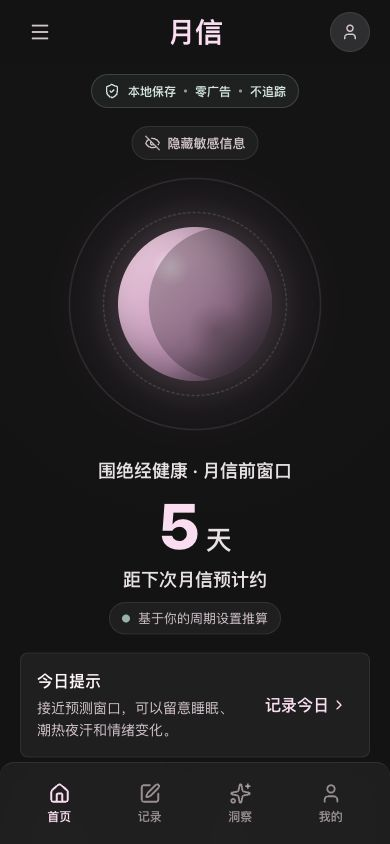
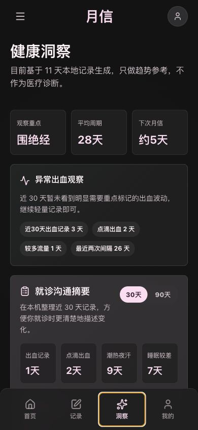
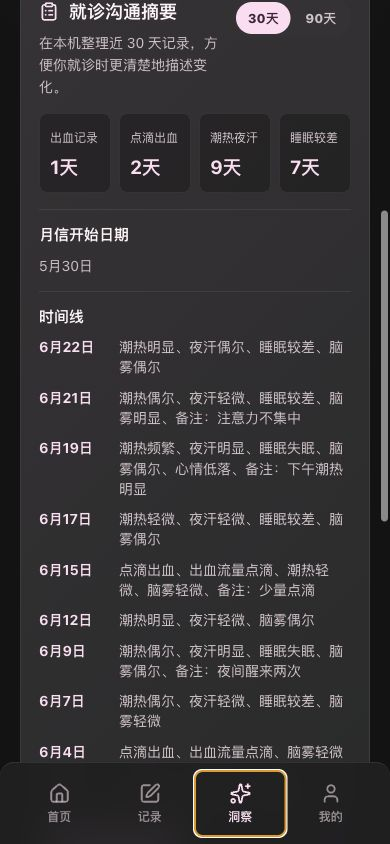
INTERNSHIP EXPERIENCE
实习经历呈现真实业务场景中的
产品推进能力。
核心实习聚焦 0-1 规划、需求/PRD、评测验收与工程协同；四款项目覆盖微信小程序、包装核对、智能客服与健康记录，重点呈现产品判断与方案落地能力。
2025.06 - 2026.01
AI 产品经理（实习）浙江绒启智造科技合伙企业
01
AI 前沿探索与 0-1 规划
跟踪 LLM 与 AI Agent 技术演进，调研 ToB 售后、细分健康及包装质检场景，输出可行性判断与个人 POC/MVP 验证方案。
02
需求挖掘与 PRD
从场景/竞品分析、用户任务与 MVP 优先级出发，输出 PRD、信息架构、主/异常流程、时序图和可交互原型。
03
模型评测与业务闭环
设计意图路由、RAG 检索规则、工具调用和人工兜底；建立 30 项指标、模型/链路评测与 RAG/安全检查项。
04
工程化协同
梳理上下游流程和数据对象，定义前后端接口契约、错误码、状态与验收口径，让方案能被研发讨论。
05
三类产品场景落地
分别完成电商客服 Agent、围绝经期健康 MVP 和 AI 包装核对 POC，展示 ToB 流程抽象、ToC 用户体验与人机协同能力。
06
测试、迭代与复盘
通过 UAT、合成数据、失败样例分类和风险清单检验方案；明确可运行、概念验证与生产上线之间的边界。